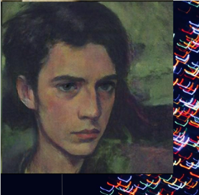
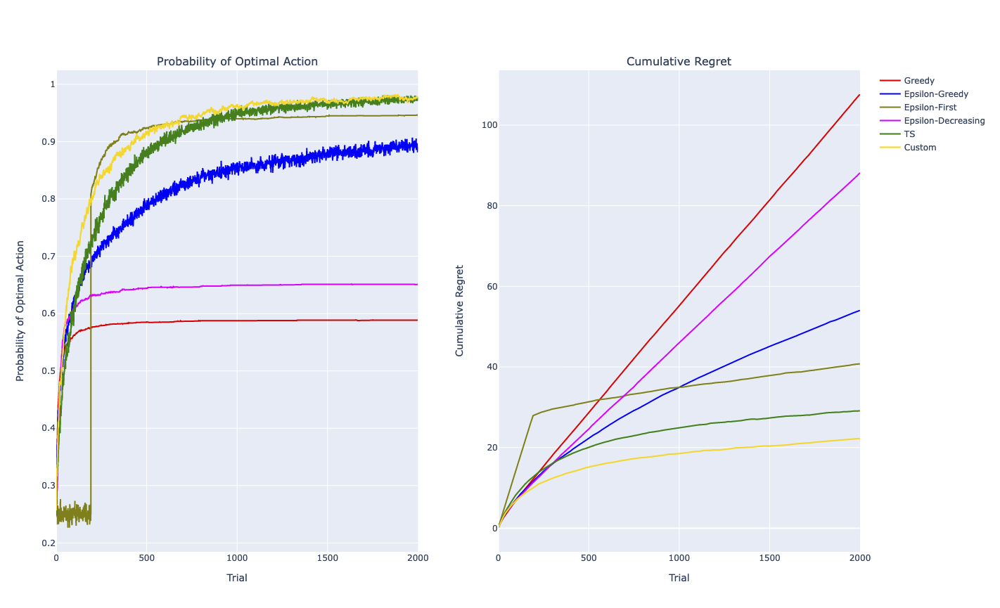
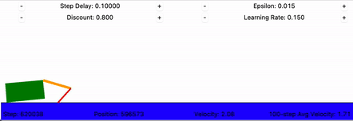
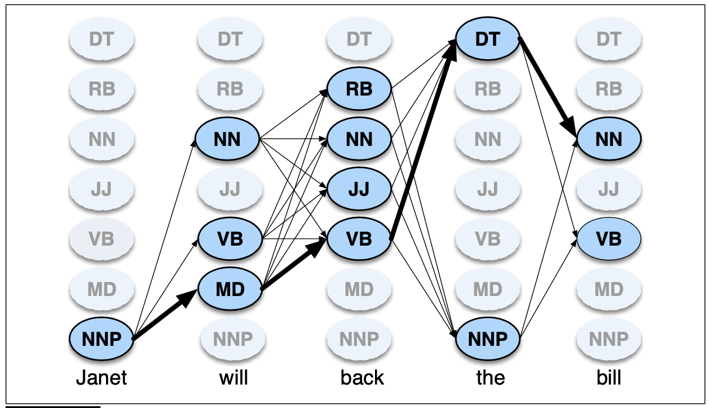

Project Overview
OLTP/OLAP warehouse, a FastAPI quote engine, and a 0–100 viability score blending LCOE, payback, NPV, solar resource, and local market maturity.

Hello! I'm Scott, a passionate AI enthusiast with a keen interest in philosophy and technology. I aim to shape the future by making current events more accessible, fostering civic awareness, and promoting democratic discussions.
My expertise lies in natural language processing, machine learning, and prompt engineering. I'm continuously exploring new frontiers in AI to augment human potential and drive innovation.
Address-to-financial-analysis for California rooftop solar — a 2.6M-row DuckDB warehouse, a 25-year cashflow model, and live NREL PVWatts + utility-rate detection across PG&E, SCE, SDG&E, and municipal utilities. Built for DATA 201 at Cal Poly Humboldt.
OLTP/OLAP warehouse, a FastAPI quote engine, and a 0–100 viability score blending LCOE, payback, NPV, solar resource, and local market maturity.
Deep-dive reports for the 15 largest CA cities plus Stanford & Berkeley — 25-year cashflows, payback curves, and utility-specific NEM 3.0 economics.
Interactive viability maps across all 2,593 California ZIP codes, with confidence tiers drawn from real Berkeley Lab installation data.

Exploring reinforcement learning through the classic multi-armed bandit problem.

A year of RL tuning reached only 42% of optimal — then a 2002 model-based algorithm (R-MAX) closed the gap to 100%.

Using Hidden Markov Models for natural language entity recognition.
Three complementary Python scrapers forming the raw-sources layer of an LLM knowledge pipeline for cognitive science.
Bounded BFS crawl with canonical page keys, SQLite graph store, and a 6-point soup validator. 834 outlinks from a single seed article.
Stanford Encyclopedia of Philosophy: peer-reviewed concept backbone with hand-curated cross-references and a built-in query layer.
Atom API metadata ingest with category-driven queries, PDF download, and text extraction across 35 CS subcategories.
Feel free to reach out via email or connect with me on social media.